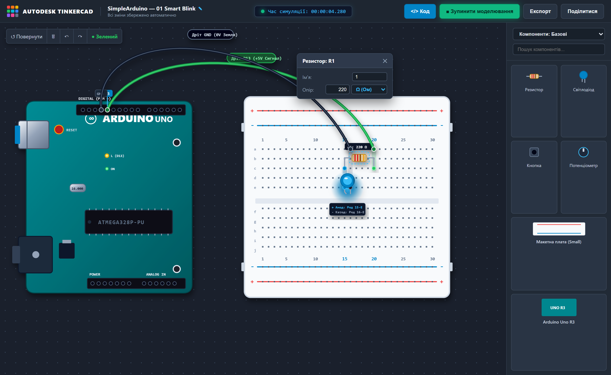
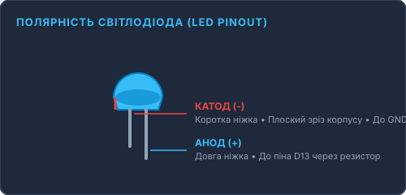
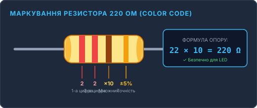

Мерехтливий маяк (Smart Blink)
Фундаментальний перший крок у фізичних обчисленнях. Ви навчитеся керувати напругою 5 Вольт через цифровий вихід Arduino, правильно підключати напівпровідниковий світлодіод через резистор 220 Ом на макетній платі без паяльника та напишете свій перший контрольний скетч C++.
Чому Blink — це апаратний «Hello, World!»?
Кожен програміст починає з коду, який друкує рядок «Hello, World!» на екрані монітора. В апаратній розробці та робототехніці абсолютним еквівалентом є Blink. Тут рядки коду вперше вириваються за межі віртуального середовища та змушують фізичний напівпровідниковий кристал випромінювати реальне світло на вашому робочому столі. Це базовий тест: він підтверджує, що плата жива, тактовий генератор працює, мікроконтролер правильно прошитий, а електричне коло замкнене.
Схеми підключення: 3 наочні формати
Обирайте зручний для вас вигляд: реальний інтерфейс Tinkercad, інженерна Fritzing-схема або фотографія живого заліза

Повна відповідність крокам збірки: Анод у рядку 15-E, Катод у 16-E, резистор 220 Ω між 15-C та 20-C, сигнал D13 у рядку 20-A.
Інтерактивний симулятор роботи схеми
Перевірте логіку Blink прямо зараз у браузері без фізичного заліза
delay(...) у вікні коду внизу сторінки! Так ви бачите прямий зв'язок між рядком програми та фізичним часом.
Що лежить перед вами: чекліст компонентів
Перевірте наявність усіх 5 компонентів перед початком складання
Arduino UNO R3
1 шт. • Плата мікроконтролераКерує напругою на контакті D13. Живиться від стандартного USB-кабелю або зовнішнього джерела 7–12В.
Макетна плата (Small)
1 шт. • 400 отворівПлатформа для з'єднання компонентів без пайки. Отвори у кожному стовпчику (a-b-c-d-e) з'єднані металевою пластиною.
Світлодіод 5 мм (LED)
1 шт. • Будь-який колірВипромінює світло лише в одному напрямку струму: від довгої ніжки (Анод +) до короткої (Катод -).
Резистор 220 Ом
1 шт. • Смуги 🔴🔴🟤🟡Струмообмежувальний опір. Захищає діод від перегорання та обмежує силу струму до безпечних 14–15 мА.
З'єднувальні дроти (Джампери «папа-папа»)
2 шт. • Зелений та ЧорнийЗелений дріт веде сигнал 5В від контакту D13 до анода діода. Чорний дріт замикає катод діода на GND (землю).
Полярність світлодіода (LED Pinout)
Анод (+) / Катод (-)Довша ніжка — завжди Анод (+). Коротка ніжка зі зрізаним плоским краєм колби — Катод (-).

Маркування резистора 220 Ом (Color Code)
22 × 10 = 220 ΩКольорові смужки читаються зліва направо: Червона (2), Червона (2), Коричнева (×10), Золота (±5%).

Покроковий монтаж: як зібрати схему без помилок
Дотримуйтесь точних координат отворів макетної плати
- Створіть проєкт: Перейдіть на tinkercad.com/circuits та натисніть кнопку «Create circuit».
- Розмістіть плату: З панелі компонентів перетягніть Arduino Uno R3 та макетну плату Breadboard Small.
- Встановіть LED: Помістіть світлодіод так, щоб ніжка Anode стала в отвір 15-E, а Cathode — в 16-E.
- Додайте резистор: Встановіть резистор між отворами 15-C та 20-C. В інспекторі задайте опір 220 Ω (Ом).
-
Проведіть дроти:
- З піна 13 Arduino до отвору 20-A (колір: зелений).
- З піна GND Arduino до отвору 16-A (колір: чорний).
- Завантажте код: Натисніть «Code» → режим «Text» → вставте скетч та натисніть зелену кнопку «Start Simulation»!
- Знеструмте плату: Від'єднайте USB-кабель від Arduino перед збіркою на макетці, щоб уникнути випадкового замикання.
- Встановіть світлодіод: Вставте довгу ніжку (анод) у рядок 15 макетки, коротку ніжку (катод) — у рядок 16.
- Підключіть резистор 220 Ом: Один вивід вставте в рядок 15 (той самий ряд, де довга ніжка діода), інший вивід — у рядок 20.
- Зелений дріт (сигнал D13): З'єднайте рядок 20 макетної плати з гніздом 13 на платі Arduino.
- Чорний дріт (земля GND): З'єднайте рядок 16 макетної плати (де коротка ніжка діода) з гніздом GND на Arduino.
- Прошивка: Вставте USB-кабель у комп'ютер, відкрийте Arduino IDE, виберіть плату та COM-порт, після чого натисніть кнопку «Upload» (Стрілка праворуч).
Таблиця точної комутації контактів
| Компонент | Контакт на макетці | Пін Arduino UNO | Колір дроту | Фізичне призначення |
|---|---|---|---|---|
| Світлодіод (Анод +) | Рядок 15, Контакт E | З'єднаний з R1 | — | Вхід струму від джерела живлення |
| Резистор 220 Ом (R1) | Рядки 15-C та 20-C | Пін D13 (через дріт) | Зелений | Обмеження сили струму до безпечних 14 мА |
| Світлодіод (Катод -) | Рядок 16, Контакт E | Пін GND (Земля) | Чорний | Замикання електричного кола на потенціал 0 Вольт |
Робочий C++ код для Arduino IDE
Повний скетч із докладними коментарями кожної команди
// SimpleArduino — Проєкт #01: Smart Blink (Мерехтливий маяк)
// Підключення: Світлодіод анодом через резистор 220 Ом до D13, катодом до GND
const int LED_PIN = 13; // Призначаємо пін 13 зрозумілим іменем
void setup() {
// Налаштовуємо цифровий контакт як ВИХІД (OUTPUT)
pinMode(LED_PIN, OUTPUT);
}
void loop() {
digitalWrite(LED_PIN, HIGH); // Подаємо живлення +5V — світлодіод світить
delay(1000); // Чекаємо 1000 мілісекунд (1.0 секунду)
digitalWrite(LED_PIN, LOW); // Знімаємо напругу 0V — світлодіод згасає
delay(1000); // Пауза 1.0 секунду перед новим циклом
}🔍 Анатомія коду «на хлопський розум»:
Наклеюємо зрозумілий стікер на пін 13. Якщо пізніше ми переставимо провід у пін 7, нам достатньо змінити число лише тут, а не по всьому скетчу.
«Ранковий чекліст». Ця функція запускається рівно 1 раз під час увімкнення живлення плати. Тут ми проводимо початкові конфігурації.
Кажемо контролеру: пін 13 — це вихід (як кран, з якого витікає струм), а не датчик-вхід, який щось вимірює.
«Нескінченна карусель». Після завершення setup() мікроконтролер безперервно крутить цей блок рядок за рядком, доки є живлення.
Відкриваємо вентиль на повну: мікроконтролер подає рівно 5 Вольт на ніжку діода. Світлодіод миттєво запалюється.
Заморожуємо виконання на 1000 мілісекунд (1 сек). Без цієї паузи процесор перемикав би стан 16 мільйонів разів на секунду, і око бачило б суцільне світло!
Швидка допомога: розв'язання 4 типових помилок (Troubleshooting)
Що робити: У 90% випадків переплутана полярність. Витягніть діод і поверніть його на 180°. Перевірте, чи чорний дріт увімкнений саме в гніздо GND, а не AREF чи VIN.
Що робити: Перевірте, чи ви не пропустили другий виклик delay(1000); після LOW. Якщо його немає — діод вимикається на мікросекунду і спалахує знову.
Що робити: Перевірте смужки резистора. Якщо ви випадково підключили резистор 10 кОм (Коричневий-Чорний-Помаранчевий) замість 220 Ом (Червоний-Червоний-Коричневий), опір зависокий і струму недостатньо.
Що робити: В Arduino IDE зайдіть у меню Інструменти → Порт та виберіть порт із позначкою вашої плати. Якщо портів немає — змініть роз'єм USB або встановіть драйвер мікросхеми CH340.
Перевірте себе перед переходом до наступного проєкту
Чому світлодіод обов'язково підключають до піна Arduino через струмообмежувальний резистор 220 Ом, а не напряму?